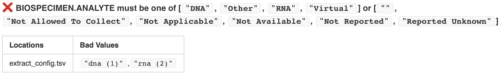

Testing Your Ingest Package¶
At this point, your ingest package should have the source data file and extract config that came with the package template along with the additional extract configuration family_and_phenotype.py from Example Extract Configuration.
It should look something like this:
my_study/
└── ingest_package_1/
├── data
│ └── clinical.tsv
├── extract_configs
│ ├── extract_config.py
│ └── family_and_phenotype.py
├── ingest_package_config.py
└── transform_module.py
Before we go any further in the tutorial, let’s explore how to test your ingest package.
The test CLI Command¶
The ingest application has a secondary test command in addition to the
ingest command. Under the hood, the test command is really just an
alias for:
$ kidsfirst ingest --dry_run
The --dry_run flag says to process your ingest package without actually
sending anything to the target service. This will help you determine whether
your ingest package runs correctly before you try to load your study data into
the target service.
We’ll use that test command throughout this section:
$ kidsfirst test <ingest package>
Data Validation¶
Whenever you run an ingest package, data validation tests will automatically determine whether the output of each stage matches a predefined set of relationship and value expectations.
The analysis has a basic understanding of the internal hierarchical relationships captured by the data model of our target service (participants are grouped into families, biospecimens come from individual participants, etc) as well as constraints on the values that each data field can have (e.g. age can’t be negative).
It will try to evaluate your stage results according to its set of rules and generate reports about what tests passed or failed. Failing a test doesn’t necessarily mean that something is wrong, just that the validator’s pre-set expectations were not met.
Let’s see what happens if you run:
$ kidsfirst test my_study/ingest_package_1
Near the end of the log, you should see something like this:
DataIngestPipeline - Thread: MainThread - ERROR - ⚠️ Ingest failed validation!
DataIngestPipeline - Thread: MainThread - INFO - See validation report files:
[
... a bunch of files here ...
]
⚠️ Ingest failed validation! means that the output of one of our stages
didn’t align with the library’s pre-set expectations. That could indicate a
mistake in your configuration, or it could be fine. It’s up to you to inspect
the validation_results.* files for each stage and decide based on your
circumstances.
Note
Stage output files named validation_results.* all contain the same
information just in different formats, so you only need to look at your
preferred one for each stage.
Open /output/ExtractStage/validation_results/validation_results.html in
your web browser to see if we can identify what the code is complaining
about. It should look something like this:
So is the big red ❌ ok there or not?
If we look back at our data from clinical.tsv and family_and_phenotype.tsv, we can see that it just doesn’t have any genomic file information in it. So our existing configuration files aren’t doing anything wrong, but in this case we know that we will need to find genomic file data somewhere to link to our specimen data.
Now scroll down further in the file until you get to the Value Tests section, and you should see another reported error:
Here it’s saying that our extracted Biospecimen Analyte data doesn’t match our designated set of valid options. We must change our extract config for the indicated data file.
We need to update the analyte operation in
extract_configs/extract_config.py. Currently it says
keep_map(in_col="analyte", out_col=CONCEPT.BIOSPECIMEN.ANALYTE),
but we need to map from the bad values to good values. So change that to:
value_map(
in_col="analyte",
out_col=CONCEPT.BIOSPECIMEN.ANALYTE,
m={
# these are regex patterns, so we must escape the parentheses
r"dna \(1\)": constants.SEQUENCING.ANALYTE.DNA,
r"rna \(2\)": constants.SEQUENCING.ANALYTE.RNA,
}
),
Run the test command one more time and you should now see that the attribute value test for biospecimen analytes is no longer failing.
Run Subsets of the Pipeline¶
As you develop your ingest package, you will likely run into scenarios where you don’t want to run the entire ingest pipeline.
The CLI allows you to run a subset of the ingest stages to make development
easier. The --stages option takes any subsequence of the ingest
stage-code/char sequence: etl. A subsequence must not contain gaps.
For example:
$ kidsfirst test my_study --stages=e # will only run the extract stage
$ kidsfirst test my_study --stages=t # will only run the transform stage
$ kidsfirst test my_study --stages=et # will run extract then transform
$ kidsfirst test my_study --stages=te # is out of order and invalid
$ kidsfirst test my_study --stages=el # has a gap and is invalid
Note that when running an ingest stage via the --stages option,
the output from the previous stage must exist, otherwise an error will occur.